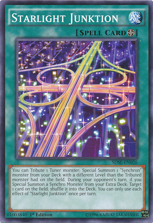
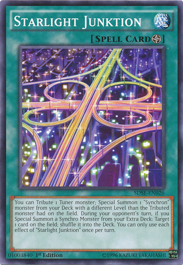

The Most Extreme Diets For Drastic Weight Loss Revealed - Time-out
2021.06.21 13:19

Time-out
DE BEDSTE MÆRKEVARE URE TIL HALV PRIS
Menu Videre til indhold UR KATALOG DYKKER / SEJLSPORTS ure STANDARD ure DAME ure AUTOMATISKE ure KRONOGRAFISKE ure RADIO STYREDE ure EVIGHEDS KALENDER ure SOLCELLE ure UR TILBEHØR Hvilket type ur er dig? Tryghed og fordele Kontakt og betalingThe Most Extreme Diets For Drastic Weight Loss Revealed
13. juni 2021 Barn What is paleo diet in tamil marianawinfreyThey make the intriguing assertion that there is a mismatch between our genes, that are finest adapted to a hunter-gatherer lifestyle as a result of that’s how we have spent most of our time on Earth, and a modern life replete with temptations like Cheetos and cronuts Their considering goes that earlier than agriculture flooded our diets with “Neolithic” grains and sugar, we had been more healthy and happier. And paleo dieters are a passionate bunch.
In paleo diet plan the consumption of the meat which means physique is getting sufficient healthy protein. Not solely is the eating regimen simple and unprocessed, the paleo food regimen promotes anti-inflammatory foods equivalent to fruits, vegetables, unsaturated fats and nuts. Protein is essential for constructing muscle mass, also muscles are instantly proportional to the metabolism which implies extra muscle mass extra will be the metabolism.
Phytate is a non-digestible substance (for people) that chelates and hinders the absorption of essential minerals like zinc, iron, calcium and magnesium. There are various conventional methods for decreasing the amount of phytates in these meals, like soaking and cooking, though they aren’t one hundred% efficient. Grains, legumes and nuts also include another compound referred to as phytate. I first encountered the phrase intuitive consuming” on Instagram, and my first assumption was that it was another list of dieting guidelines wrapped in a pretty package deal of empowerment and self-care. Subsequently, if your diet depends heavily on these kinds of meals, you’ll doubtless expertise points acquiring sufficient of those important minerals.
In reality, a key tenet of the Paleo food plan is recognizing bioindividuality and providing the broad schooling to assist everyone understand the most effective selections but additionally figure out what works (and would not work) for them as an individual. The Paleo weight-reduction plan is not a dogmatic method to consuming with no flexibility, room to cheat, or capacity to self-experiment. Another key tenet is individual sustainability, meaning that you make the perfect decisions as usually as possible, but you do not have to be perfect. see Making Healthy Choices: What’s Your Forex? Ideally, you’ll study what your physique must thrive and what it tolerates after which dwell somewhere in between (and if that means the occasional slice of birthday cake or ice cream, that’s okay!
We would like you to have the ability to maintain clean paleo consuming, so indulgences like a piece of dark chocolate or a glass of wine on occasion is completely positive! While a paleo weight loss program is rooted in how our ancestors ate, this doesn’t mean that it’s a must to grill meats over an open flame. Having balance is what is the paleo diet good for makes our paleo meal plans smart, sustainable, and delicious. Right here at PlateJoy, we like to supply dieta paleo pdf meal plans which are smart and sustainable long-time period.
I’ve supplemented it with plenty of leafy inexperienced greens, meats, and the oils prompt by this web site. I am at present recording my physique weight, fat proportion, weight percent water, and blood strain at roughly the identical time every day. I’ve determined to perform my very own experiment and have cut grains, dairy, and refined sugars from my weight loss program.
Merely choose a meat or fish dish on the menu and swap in some extra veggies. In the event you’re not dropping pounds while consuming a Paleo + Dairy” Weight loss program, you’re still eating too many energy. If you’re going to cheat: The weight loss program can be simply as healthy, but potentially more rewarding, if you happen to include modest amounts of dairy (a great supply of wanted calcium) as well as a wide range of complete grains and legumes. Abstract Consuming out whereas following the paleo weight-reduction plan doesn’t should be exhausting.
It is rare that individuals need more than 1g of protein per kilogram of lean body mass and currently most Aussies eat double this advice! The main target in Australia ought to be on getting sufficient excessive iron food selections in our diets, as a result of while we all seem to get enough protein, there are some key inhabitants teams (mostly girls and young women) who do not get sufficient iron. While the Paleo diet focuses on recent foods, as do the ADGs, there is too much emphasis on protein meals for most people.
When avoiding processed vegetarian protein sources, similar to tofu, oats, seitan or tempeh, it is vital to ensure you’re not replacing them with too much crimson meat. In fact, in slicing out trendy foods, you’re eliminating the majority of processed meals , from minimally to ultra-processed, from your food plan. The NHS advises you to eat not more than 70g of pink (and processed) meat per day.
For the following few hours (as long as the preceding challenging train lasted) continue to focus your food plan on carbohydrates, particularly reasonable to excessive glycemic load carbohydrates together with protein at a 4-5:1 carbprotein ratio. Now is the time to eat nonoptimal meals such as pasta, bread, bagels, rice, corn and different foods rich in glucose as they contribute to the required carbohydrate recovery course of. Perhaps the right Stage IV meals are raisins, potatoes, sweet potatoes and yams.
Indlæg navigation
← What Is The Paleo Eating regimen? Here is Every little thing You Want To Know YouTube σύγκρουση μετωπική ΜΕΙΚ ΑΠ Media Το σχόλιο του Ν.Χατζηνικολάου στο κεντρικό δελτίο ειδήσεων του Star Drevet af WordPress- (PDF) Pros & cons of some popular extreme weight-loss diets
- 10 Of The World's Most Dangerous Diets | Balls.ie
- 10 of the most extreme and dangerous weight-loss methods .
- The Military Diet: Lose 10 Pounds in Just 1 Week? - Healthline
- 15 Diet Fads That Are Downright Dangerous | Best Life
- 11 Most Extreme Weight Loss Diets That People Actually Follow
- The Most Extreme Diets For Drastic Weight Loss . - Time-out
- Top 10 EXTREME Diets (Lose 10 Pounds in 3 Days) - YouTube
- 5 of the most extreme diets - Heart Matters magazine | BHF
- 5 Extreme Diets You Shouldn't Try | Wellness | US News
- (PDF) Pros & cons of some popular extreme weight-loss diets
- 10 Of The World's Most Dangerous Diets | Balls.ie
· - 10 of the most extreme and dangerous weight-loss methods .
- The Military Diet: Lose 10 Pounds in Just 1 Week? - Healthline
- 15 Diet Fads That Are Downright Dangerous | Best Life
- 11 Most Extreme Weight Loss Diets That People Actually Follow
- The Most Extreme Diets For Drastic Weight Loss . - Time-out
- Top 10 EXTREME Diets (Lose 10 Pounds in 3 Days) - YouTube
- 5 of the most extreme diets - Heart Matters magazine | BHF
- 5 Extreme Diets You Shouldn't Try | Wellness | US News
·
·
·
 
